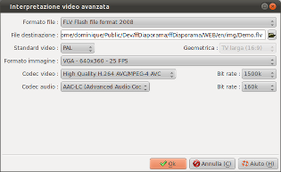

Introduzione
Questa finestra ha due
aspetti differenti a seconda che hai cliccato il pulsante per
tipo di dispositivo o il pulsante Avanzate.
Se si fa clic sul pulsante tipo di dispositivo, la finestra ha due zone di selezione:
Se si fa clic sul pulsante tipo di dispositivo, la finestra ha due zone di selezione:
- La prima zona permette di selezionare una categoria di dispositivi
- La seconda zona consente di selezionare un modello di dispositivo

Descrizione della finestra in modalità avanzata
| Formato
file |
Selezionare dall'elenco visualizzato il tipo di file da utilizzare per il rendering del video. |
| Standard video | Selezionare lo standard video da utilizzare: PAL or NTSC. |
| Formato
immagine |
Selezionare dall'elenco visualizzato il formato dell'immagine da utilizzare per il rendering del video. |
| Codec
video |
Selezionare dall'elenco visualizzato il codec video da utilizzare per il rendering del video. |
| Bit
rate |
Selezionare dall'elenco visualizzato il rapporto di compressione del video. |
| Codec
audio |
Selezionare dall'elenco visualizzato il codec audio da utilizzare per il rendering del video. |
| Bit rate | Selezionare dall'elenco visualizzato il rapporto di compressione del audio. |
Interpretazione del video
Una volta che si è
selezionato il dispositivo o impostato i parametri avanzati, un
click sul pulsante OK avvia il processo di rendering del video.
In qualsiasi momento durante questo processo, un click sul pulsante "Annulla" fermerà il processo.
Generalmente, per un video Full-HD 1080p :
Questa durata sarà molto più breve per un video in risoluzione VGA. Ecco perché vi consigliamo di effettuare tutti i test e le prove in bassa risoluzione, e rendere il vostro video in Full-HD solo per l'ultimo passo.
In qualsiasi momento durante questo processo, un click sul pulsante "Annulla" fermerà il processo.
Osservazione :
A seconda del modello del dispositivo o dei parametri avanzati che sono stati selezionati, la generazione del video può richiedere molto tempo.Generalmente, per un video Full-HD 1080p :
- Su un PC con 4 core veloci (Core i7 per esempio) : Il processo richiederà circa 2 minuti per ogni minuto di video che deve essere interpretato
- Su un PC con 2 core (Core 2 duo per esempio) : Il processo richiederà circa 5 minuti per ogni minuto di video che deve essere interpretato
Questa durata sarà molto più breve per un video in risoluzione VGA. Ecco perché vi consigliamo di effettuare tutti i test e le prove in bassa risoluzione, e rendere il vostro video in Full-HD solo per l'ultimo passo.
See also
- Indice del WIKI ffDiaporama
- Rendering video
- Filmato standard e risoluzione
- Contenitori filmato e codec
ffDiaporama 1.0